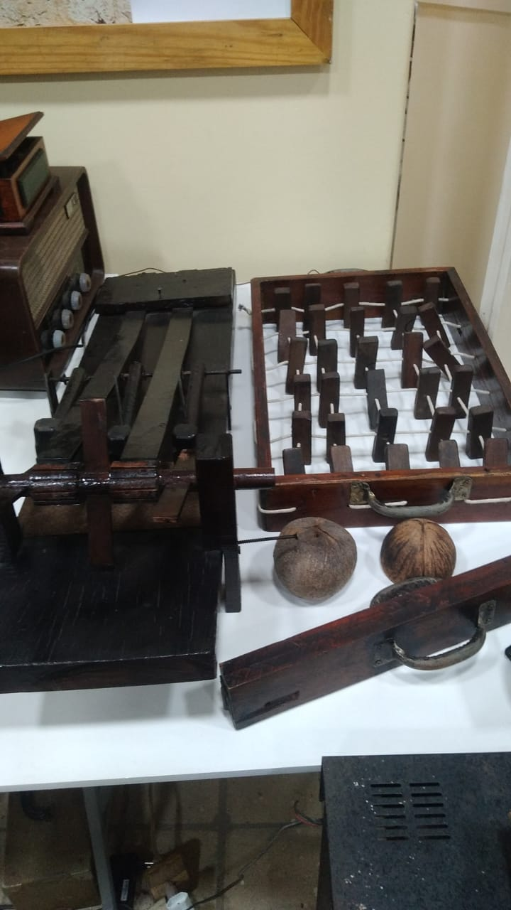

A Magia da Sonoplastia Antiga
"Antes dos bits e bytes, o som do cinema era criado com engenhosidade mecânica e truques de ilusão auditiva."

A Era do Cinema Mudo (1895-1927)
Apesar do nome, as exibições nunca foram silenciosas. Cada sala tinha seu próprio sistema sonoro:
- Pianistas ao vivo: Improvisavam partituras baseadas no clima das cenas
- Efeitos práticos: Máquinas de vento, pratos de trovão e passos gravados em estúdios
- Orquestras completas: Nos grandes cinemas das capitais
Peça em Destaque: Nosso Vitaphone original (1926) que sincronizava discos de 78rpm com o projetor.
Curiosidade: Os operadores precisavam trocar os discos a cada 4 minutos e sincronizá-los manualmente!
Curiosidade: Os operadores precisavam trocar os discos a cada 4 minutos e sincronizá-los manualmente!
A Revolução do Som Óptico (1927-1950)
Com "O Cantor de Jazz" (1927), surgiu a tecnologia que dominou 30 anos:
| Técnica | Como Funcionava | Desafios |
|---|---|---|
| Faixa sonora lateral | Ondas luminosas lidas por célula fotoelétrica | Ruído de fundo constante |
| Sistema Movietone (Fox) | Som gravado como variação de densidade | Perda de altas frequências |
| RCA Photophone | Faixa de som entre os fotogramas | Sincronismo delicado |

Projetor Western Electric (1932)

Faixa sonora em película 35mm

Estúdio de dublagem anos 1930
Efeitos Sonoros Artesanais
Os estúdios criavam bibliotecas de sons com inventividade:
Passos na neve
Amido de milho espremido em couro
Espadas medievais
Vibração de serras elétricas amortecidas
Trovões
Folhas finas de estanho sacudidas ("Thunder Sheet")
Pássaros
Atrito entre rolhas de cortiça úmidas
Experiência no Museu: Visite nossa Estação Foley e crie efeitos sonoros com réplicas dos equipamentos dos anos 1940!
A Transição para o Magnético (1950-1990)
A película ganhou faixas magnéticas para maior fidelidade:
- Estéreo 4-track: Usado em "Cantando na Chuva" (1952)
- Magnetic Striping: Faixas coladas no filme
- Dolby Stereo (1975): Redução de ruído que permitiu "Guerra nas Estrelas"
Dado Técnico: Um rolo de 35mm com trilha magnética pesava 50% a mais que um convencional.